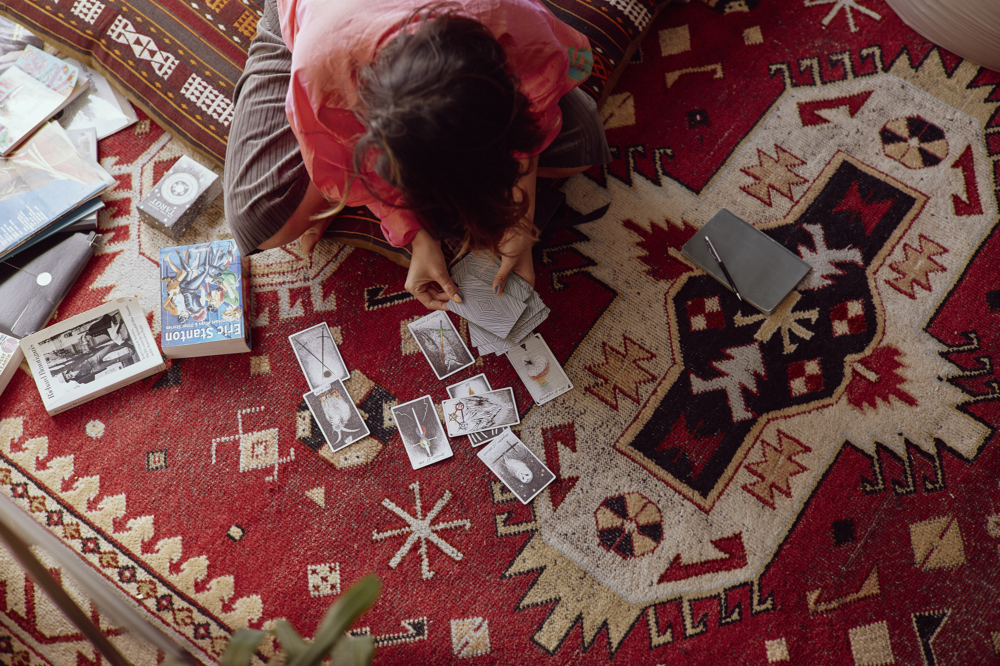
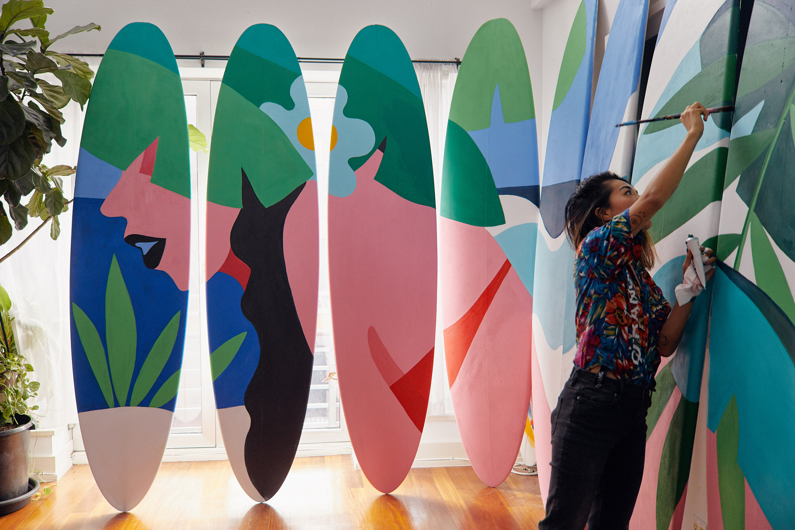
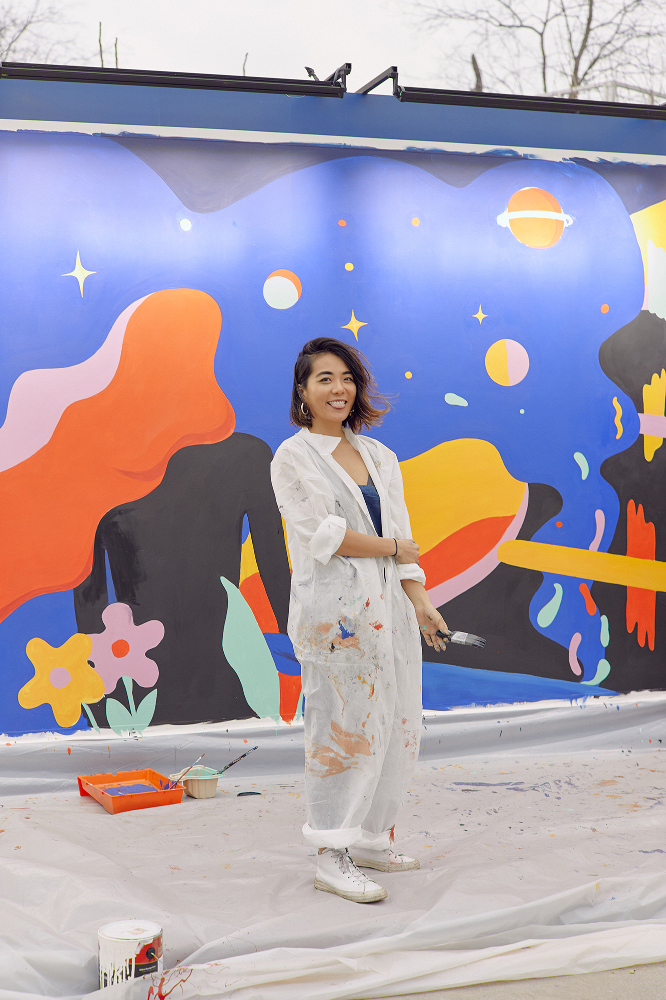
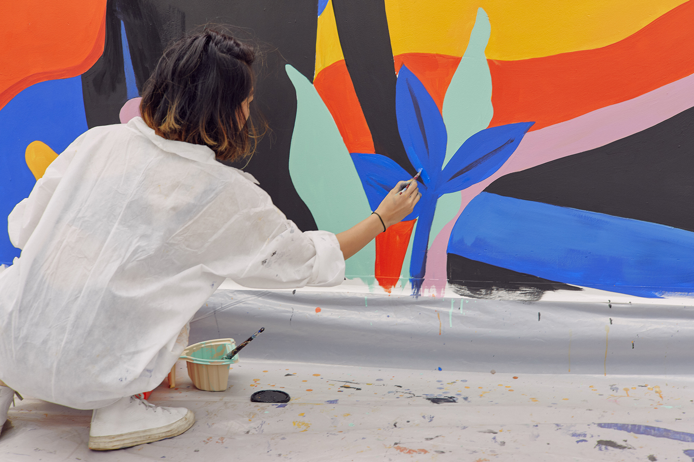

Shawna X is an independent artist and visual director, working with various mediums across digital, spatial, and motion spaces. Beyond commercial collaborations with brands including Adidas, Adobe, and Ghostly International, Shawna enjoys non-profit and personal projects discussing cultural identity, sexuality, and the modern creative process. Known for her graphical, curious, and vibrant aesthetic, Shawna is inspired by Imperial Chinese textile design, poetry by Richard Brautigan, The Unbearable Lightness of Being by Milan Kundera, and ’70s Italian architecture. Shawna is self-named as Time’s 1986 Person of the Year.
Is there a moment that you can remember when you first thought of yourself as an artist?
Some years ago, when I was working with a musician, I’d run into some conflicts with licensing, and their manager chimed in and said, “You know what? I didn’t realize that my client hired an artist. I thought he just hired a designer or an illustrator. I’m sorry for the discrepancy. We don’t mean to embark on your creative vision and we understand your fees.” And I was like, “Whoa.”
I didn’t realize that some people viewed “artist” as a term so differently than “designer,” “illustrator,” or any other creative role, as I thought they were all similar, but that time, when someone made that differentiation for me, was when I really began to analyze all these roles and what they mean.
Where do you draw the line in terms of artistic integrity? Were they asking you to make something that you didn’t want to?
That’s a big part of it. As an artist, you are selling your voice, but often when you work as an illustrator/designer/commercial artist, you are creating for someone else, so there is a difference. I definitely see it as: the space you create within for an outside purpose, and space you create within for a purpose within yourself. However, the line is still blurred.
I think there’s so much debate about it, where people are like, “You’re not an artist if you blah, blah, blah,” or, “You’re this because you blah, blah, blah.” Who gives a fuck? As long as you are saying what you want to say, with context, research, and informed input, I think it’s important to share. I think both self- and worldly-awareness are a very necessary part of having integrity.
What does authenticity mean?
Authenticity is complex, because it’s subjective. Most people place assumptions on what that is and project it upon others: “Oh, this artist is selling out, because she did the backdrop for a Drake music video.” We don’t know anyone’s processes to say that readily, but we still say it.
Authenticity a very complicated subject. I don’t think it’s something that is easy to capture from the outside, when you’re removed from the process. That’s why mainstream work seemingly lacks authenticity: because it speaks to everyone, and sometimes with a formula because it works or sells. I do see people attaching onto certain concepts and aesthetics without any analysis and self interpretation, and that to me is what confuses the whole dynamic. You have creators who have carefully crafted a certain thing, and then it becomes popular and becomes a trend, and then everyone is doing it. When that happens, the root and inspiration of it dissipates and becomes almost meaningless. Some creators still pull through with their own authenticity, regardless of any infiltration, and that to me is quite amazing. Of course, authenticity is how and why you engage and persevere. It’s a subtle thing.
Who do you make work for?
Right now, it’s a mixed bag. I often go back and forth between making work as a cathartic release for myself, and then for the “material.” I think both are important to balance. I’ve made work for a lot of brands, musicians, and organizations—commercial work in that sense. I do it because it puts me out in the world for more opportunities, but also paves a space for me to reflect and create on my own.
On a deeper level, there’s something about sadness I connect to, and I love creating for that specifically. I resonate with people who have grown up marginalized and lost, and those who deal with a sense of sadness about it all, underneath all the layers; that’s a large root of my work. On the external level, I connect with people who are first- or second-generation immigrants, people who connect with a culture outside of the trend. Lately I have been identifying more as a woman, too, in a way that I never thought I did before. Before, I felt genderless, as I was brought up to not think of gender so distinctly.
What drives you as an artist?
Well, I love [being an artist] because vulnerability is something I enjoy exploring, however painful it is. I’m a sadist in that way. I love the pain away.
When I am at a place with my creative self where I’m like, “This sucks,” I know I’m moving forward. Some people hate it. It’s just how I perceive it. People who are open with being vulnerable, they just practice it quite a bit, because it’s better than a routine when you are blindly living, and then doing the same thing over and over again, without deeper thought. I’d much rather fail than be in a blind routine.
What scares you the most about starting a new project?
I think what scares me is the end. I think way too much about the output, and that’s something that I need to pull away from because I think a big part of being a creator is the process. You’re tapping into your inner child, your inner demons, your inner fairy godmother. A lot of times, especially with social media, you just see the output, and so people strive for the output more than the process, and I think I have fallen into that as well.
I’m learning to curb that every day by focusing on why I’m doing it in the first place. I don’t need to compare myself to others, just to myself. And I do think fears hold you back from being productive.
What energizes you the most when starting a new project?
I mostly enjoy the pre-project: going into nature, listening to music, reading graphic novels, going to shows or otherwise distracting my mind so it’s completely void of work and just focused on simple pleasures. You need to have a space for yourself to rejuvenate before you dive into any project, because chances are, you’re exerting your creative energy, and also your emotional energy for whatever work you will be doing.
Also, usually when I start something new I’m most energized if I’m learning something new as well.
What is an important business lesson that you’ve learned as an artist?
Honesty and open communication is extremely important. Protect yourself, make an agreement, and write it all down. Also, be willing to compromise. Make sure that your client knows what they want, but they also know what you want. I like to think of clients as collaborators, and our relationship is reciprocal. If they treat you any less than that, then that’s a dynamic that you have to consider if and when you move forward.
What happens if they don’t want to collaborate? What happens if they just want to direct you?
There are times when I can tell a client isn’t valuing my voice as much as they just want to use and direct me. Sometimes, if I am making commercial work, the client has their own audience that they’re trying to style my voice for, but I usually understand that before I sign up for the project. In that case, I make the compromise beforehand.
Sometimes I get to a point where I’m like, “I don’t need to put that much emotional energy into this.” I want to save my emotional energy for personal work, work that I am deeply humbled by, or for myself. So at times I’ll weigh and evaluate on how to compromise. It’s different for me now, because when I was starting out, I was much more willing to compromise. Now I am much more confident in what I want.
What would happen if you stopped making art?
I would love to be a journalist. Having the ability to engage and hear stories from different types of people, in different areas of their lives and experiences, is really special to me. I think that’s what ultimately drives my personal artwork. It gives perspective, and makes me think, “Who am I?” in the realm of all who have completely different perspectives, and who are walking in different lanes of life than I am.
Art is not everything. I definitely think we need to know that: creatives, artists, and musicians are not everything. There is so much more than this.